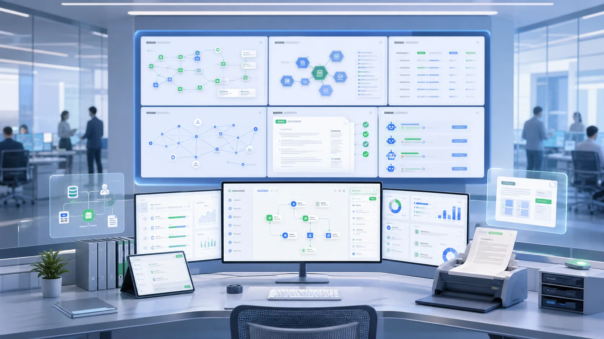
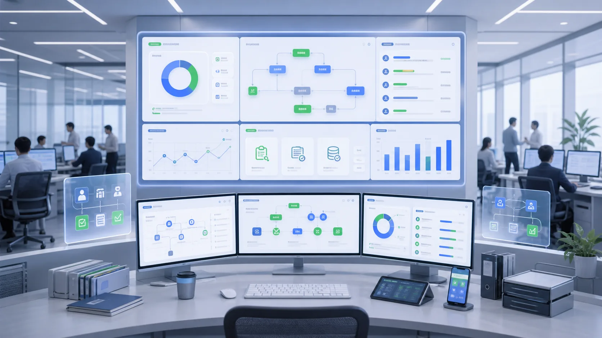

WEB / SAAS
业务系统与 SaaS 平台
管理后台、客户系统、订单流程、会员体系、经营报表和多角色权限。
轻微科技面向政府、高校、集团企业与中小企业客户，提供信息化平台建设、软件开发、小程序、公众号、支付服务、App、SaaS、IoT 接入、数据治理、系统集成和长期运维服务。自研 Qwe 企业级 AI 中代码平台，融合业务建模、流程编排、数据应用、RPA、文档处理与知识库问答等能力，帮助客户更快建设可用、可管、可持续演进的信息化系统。
门户、流程、业务应用与管理驾驶舱一体化规划和建设。
Web 系统、App、小程序、公众号、SaaS 与企业管理后台。
对接微信生态、支付服务、设备数据、第三方接口和消息中心。
数据治理、AI/RPA、上线保障、版本迭代和持续优化服务。

Qwe 不是替代软件工程，而是把业务建模、流程引擎、数据应用、集成接口和 AI 能力沉淀成可复用的建设底座。轻微科技以平台提升交付效率，以研发和运维保障复杂项目质量。
除了政企信息化平台，轻微科技也面向企业线上业务、客户服务、运营管理和设备接入场景，提供定制软件开发与系统集成服务，让前端触点、业务流程和后台管理形成完整闭环。
管理后台、客户系统、订单流程、会员体系、经营报表和多角色权限。
面向用户服务、移动办公、巡检工单、预约填报和业务办理等移动场景。
对接微信公众号、模板消息、微信支付、订单结算和第三方支付接口。
接入设备数据、传感器、门禁、告警、第三方系统接口和数据同步服务。
从客户真实痛点出发，组合平台、流程、数据、集成和 AI 能力，把分散需求转化为可上线、可治理、可持续演进的系统方案。

建设统一门户、待办消息、流程审批和常用应用入口，减少跨系统切换和重复登录。
汇聚关键业务数据，统一指标口径和权限边界，构建可信的数据视图和管理看板。
将审批、填报、工单和重复操作沉淀为线上流程，并通过 RPA 衔接低频系统。
围绕政策、制度、项目资料和业务文档，提供检索、问答、摘要和文档处理能力。
打通既有系统、统一身份、接口服务、消息通知和数据同步，保留已有投资价值。
围绕运行保障、版本迭代、问题响应和功能优化提供长期服务，让系统跟随业务变化。
我们把平台产品、定制研发和长期运维放在同一套交付体系里，既追求建设效率，也重视复杂组织场景下的稳定运行和持续优化。
通用能力用 Qwe 平台复用，复杂业务由研发交付承接，避免简单套模板导致系统后期难扩展。
围绕组织架构、权限、审批、报表、数据治理和系统集成设计方案，让系统贴合真实管理方式。
上线后继续处理版本迭代、运行保障、问题响应和功能优化，让数字化建设持续产生价值。